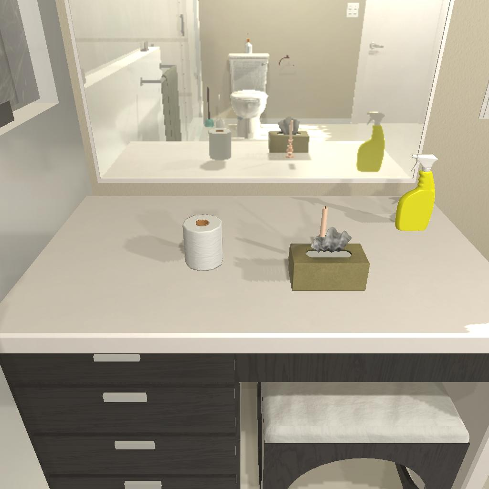

---------------------------------------------------------task: 28---------------------------------------------------------
--------------------------------------------------------------------------------------------------------------------------------------------------------------------
--------------------------------------------------------------------------------------------------------------------------------------------------------------------
Step:--------------------------------------------------------------------------9-------------------------------------------------------------------------------
----------------------------------------
VLM Prompt:
**Task**
Please perform as an embodied AI agent. Our final objective is to find two spraybottle and put them in toilet. Below is the plan for completing the task, the current observation, alongside historical data and admissible actions for the next step. Please determine the best action for the next step!
**Plan**
Below is a detailed step-by-step plan to complete the task.
1. Find a spray bottle.
2. Pick up the spray bottle.
3. Locate the toilet.
4. Place the picked-up spray bottle in the toilet.
5. Find another spray bottle.
6. Pick up the second spray bottle.
7. Return to the toilet.
8. Place the second picked-up spray bottle in the toilet with the first one.
**Current Observation**
Displayed is an image capturing the current position of the agent.
**History Information**
Displayed are the previous observations with their corresponding actions.
Current State 2:
1. Place: Toilet
2. Step Index in Plan: 4
3. Objects: Spray bottle
4. Action: Go to toilet 1
Current State 3:
1. Place: On top of the toilet tank
2. Step Index in Plan: Step 4
3. Objects: Spray bottle
4. Action: Take showerdoor 1 from toilet 1
Current State 4:
1. Place: Toilet
2. Step Index in Plan: 4
3. Objects: Spray bottle, toilet
4. Action: Put showerdoor 1 in/on toilet 1
Current State 5:
1. Place: Toilet
2. Step Index in Plan: 4
3. Objects: Spray bottle
4. Action: Go to countertop 1
Current State 6:
1. Place: Countertop 1
2. Step Index in Plan: 4
3. Objects: Yellow spray bottle
4. Action: Examine showerdoor 1
Current State 7:
1. Place: Bathroom countertop
2. Step Index in Plan: 4
3. Objects: Yellow spray bottle, toilet
4. Action: Go to toilet 1
Current State 8:
1. Place: Bathroom
2. Step Index in Plan: 4
3. Objects: Spray bottle, toilet
4. Action: Put spray bottle in/on toilet
Current State 9:
1. Place: Bathroom
2. Step Index in Plan: 5
3. Objects: Spray bottle
4. Action: go to countertop 1
**Admissible Actions**
(1): go to bathtub 1
(2): go to bathtubbasin 1
(3): go to cart 1
(4): go to sink 1
(5): go to garbagecan 1
(6): go to sinkbasin 1
(7): go to drawer 1
(8): go to drawer 2
(9): go to drawer 3
(10): go to drawer 4
(11): go to toiletpaperhanger 1
(12): put showerdoor 1 in/on countertop 1
(13): examine showerdoor 1
**Analysis Guideline**
1. Analyze the **History Information** and determine our current step in the plan and our current place.
2. List all visible objects related to the task in the current observation.
3. Analyze the objects in the current observation based on the history and the requirements for the current step, and then determine if we can complete the step with the current observation.
4. Analyze and decide on the most appropriate action to take.
5. Summarize the analysis using the following format: "Analysis: [The summarization of the analysis], The Most Appropriate Action: (i which is the integer.): [Selected action]"
**Notes**
1. We must complete each step of the plan in order and cannot skip steps when the previous ones are not finished.
2. For "Go to" actions listed as "go to xxx [n]", interpret this as there are n distinct actions available: "go to xxx 1", "go to xxx 2", ..., "go to xxx n". Select one specific action from these options instead of using "go to xxx [n]".
3. If receptacles such as drawers, cabinets, and so forth are closed in the current observation, we may try to open them.
4. Pay attention to synonyms and ensure clarity in the terms used.
5. If there is no history available, we are at the first step and the current place is "Unknown".
6. The most appropriate action must be in the **Admissible Actions**, and we cannot generate a new action that is not in the **Admissible Actions**.
**Answer**
Please select the most suitable action by following the **Analysis Guideline**, keeping the above **Notes** in mind.
----------------------------------------
----------------------------------------
VLM Response:
Analysis: Based on the History Information, we are currently at Step 5 of the plan, which is to find another spray bottle. The current observation shows us at the bathroom countertop, where a yellow spray bottle is visible. This matches our requirement for the current step, meaning we can complete this step with the current observation. The Most Appropriate Action is not directly listed in the Admissible Actions, but we can infer that picking up the yellow spray bottle is the intended next step, as it aligns with the plan's progression. However, since the action "pick up the yellow spray bottle" is not explicitly stated in the Admissible Actions, we must select the closest action that could potentially lead to picking up the spray bottle. In this case, examining the spray bottle would be the most relevant action.
The Most Appropriate Action: (13): examine showerdoor 1
----------------------------------------
----------------------------------------
>>> Refine VLM Response and Get Pure Action: examine showerdoor 1
----------------------------------------
-----------------------------------------------------------------
Running time: 13.059966802597046 seconds
Total Money: 14.290469999999992
-----------------------------------------------------------------
-----------------------------------------------------------------
Summarization Prompt:
**Context**
Analysis: Based on the History Information, we are currently at Step 5 of the plan, which is to find another spray bottle. The current observation shows us at the bathroom countertop, where a yellow spray bottle is visible. This matches our requirement for the current step, meaning we can complete this step with the current observation. The Most Appropriate Action is not directly listed in the Admissible Actions, but we can infer that picking up the yellow spray bottle is the intended next step, as it aligns with the plan's progression. However, since the action "pick up the yellow spray bottle" is not explicitly stated in the Admissible Actions, we must select the closest action that could potentially lead to picking up the spray bottle. In this case, examining the spray bottle would be the most relevant action.
The Most Appropriate Action: (13): examine showerdoor 1
**Summary Format**
1. Place: [Specify the current location]
2. Step Index in Plan: [Dispkay the current step number in the plan before taking the current action]
3. Objects: [List the objects relevant to the task]
4. Action: [Describe the most appropriate action without the "(x)" and keep the integer of the object]
Please analyze the **Context** and summarize the analysis using the **Summary Format**.
-----------------------------------------------------------------
-----------------------------------------------------------------
Summarization Response:
1. Place: Bathroom Countertop
2. Step Index in Plan: 5
3. Objects: Yellow Spray Bottle
4. Action: Examine showerdoor 1
-----------------------------------------------------------------
-----------------------------------------------------------------
Text Observation:This is a normal showerdoor 1
-----------------------------------------------------------------
UNSUCCEED